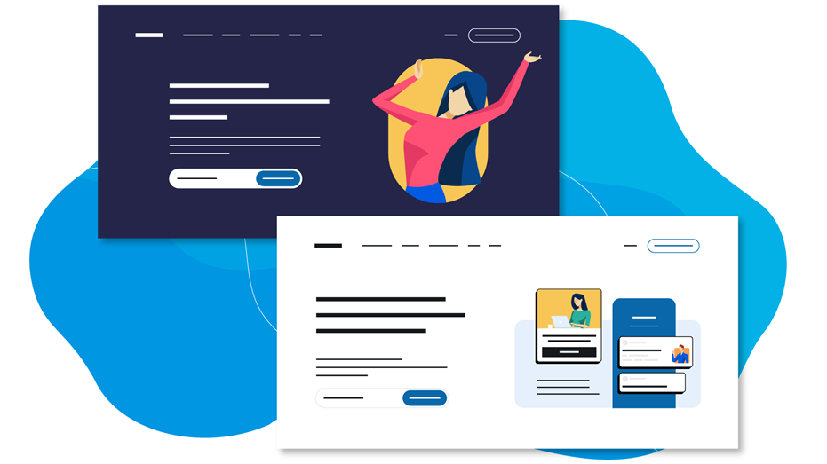

Visual design:-
* Aim:- visual design on imrpoving the aesthetic, appeal and usability of a design or product.
* Elements:- visual designers work with iamges,typography, spacing, layout, and color to create visually appealing interfaces.
* Scope:- visual design extends beyond aesthetics; ikt also considers how elements are palced to optimize user experience and drive conversion.
Example:- Design visuals for a website, app, social media compaign, or branded email templates fails under visual design.
Example of visual design

UI design:-
* Focus:- UI design specifically targets the Digital Product Interface the surface layer users interact with.
* Components:- UI designers create screens, buttons, and interactive elements that allow users to navigate and use the product.
* Goal:- UI designers aim for cohesive, visually appealing interfaces that enhance usability.
Great example of visual design
Google’s homepage is one of the most visited webpages in the world. The raw simplicity of the page is partly why it is so well designed, but here are other factors that make this page work superbly:
Visual design is about creating and making the general aesthetics of a product consistent. To create the aesthetic style of a website or app, we work with fundamental elements of visual design, arranging them according to principles of design. These elements and principles together form the building blocks of visual design, and a firm understanding of them is crucial in creating a visual design of any product.